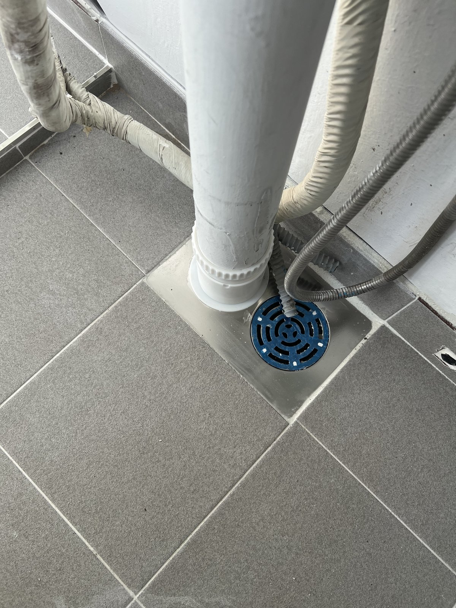
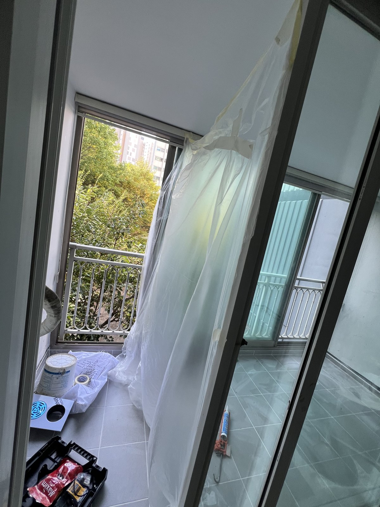
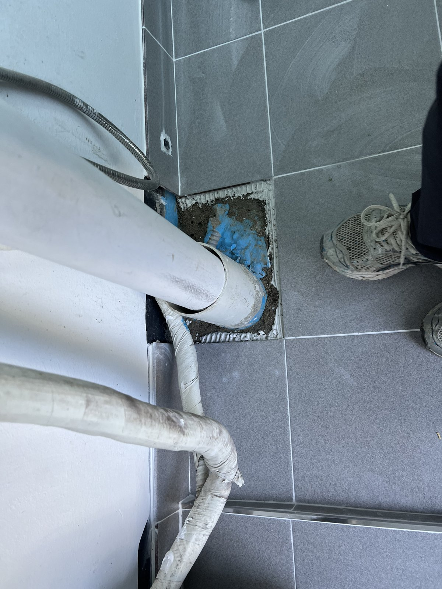
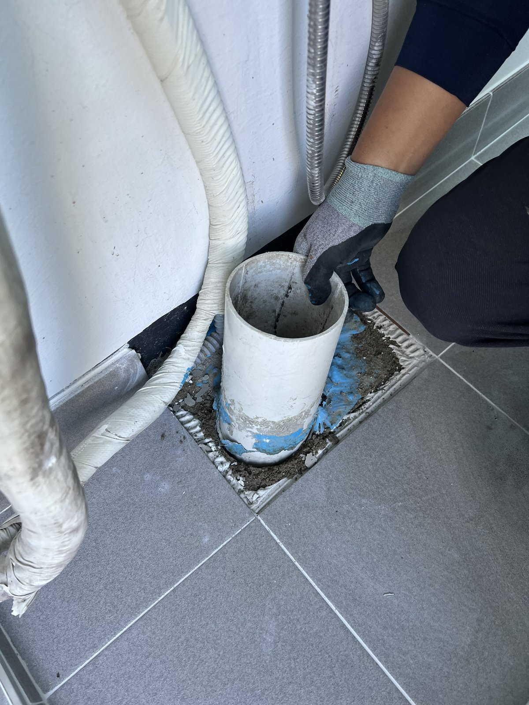
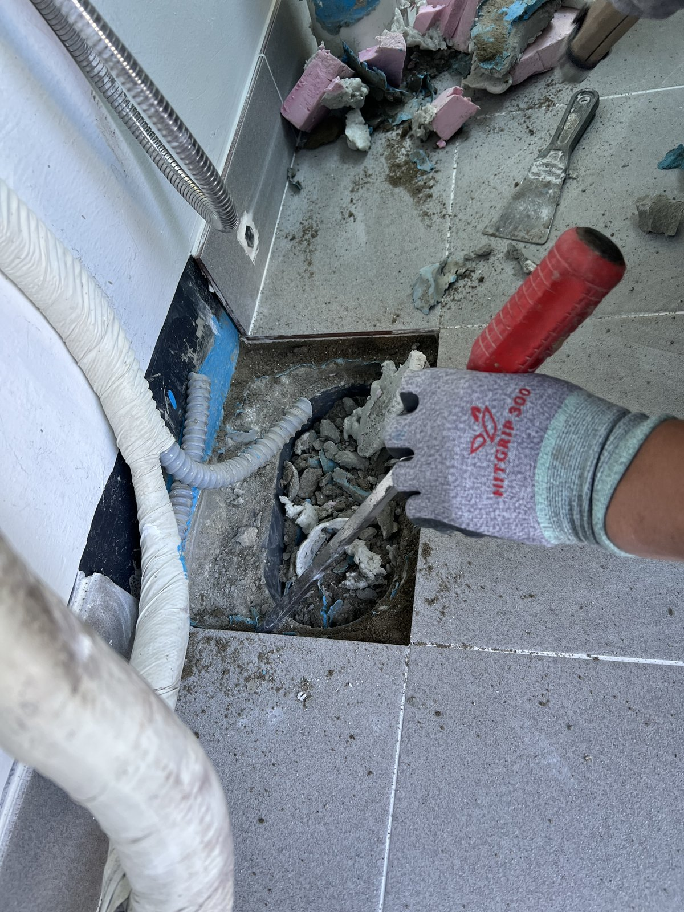
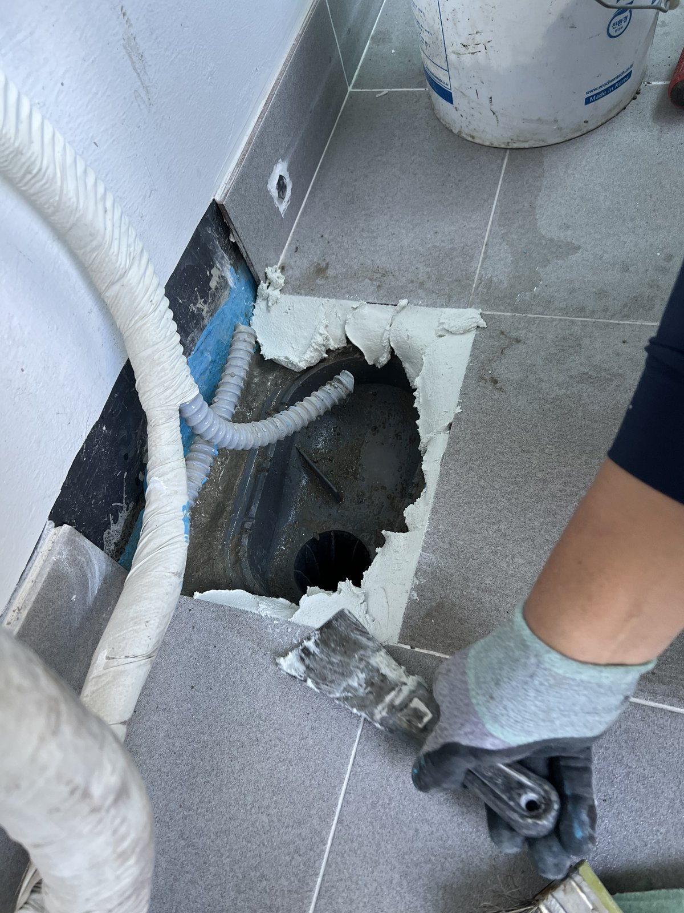
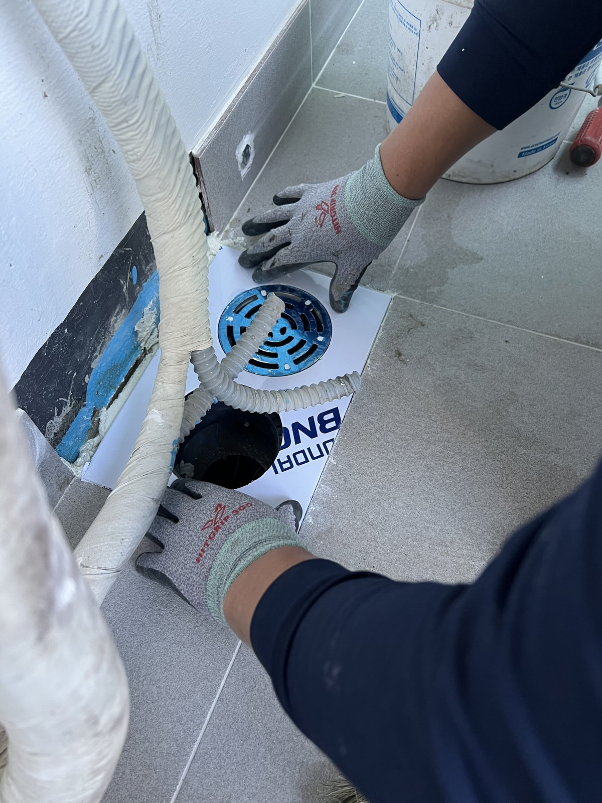
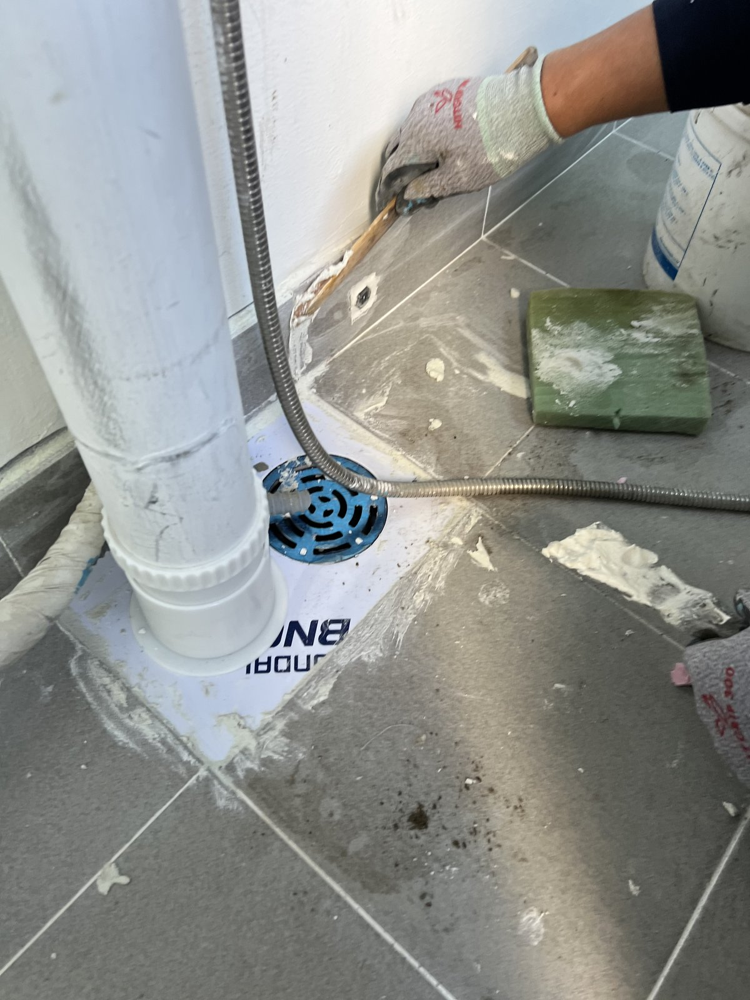
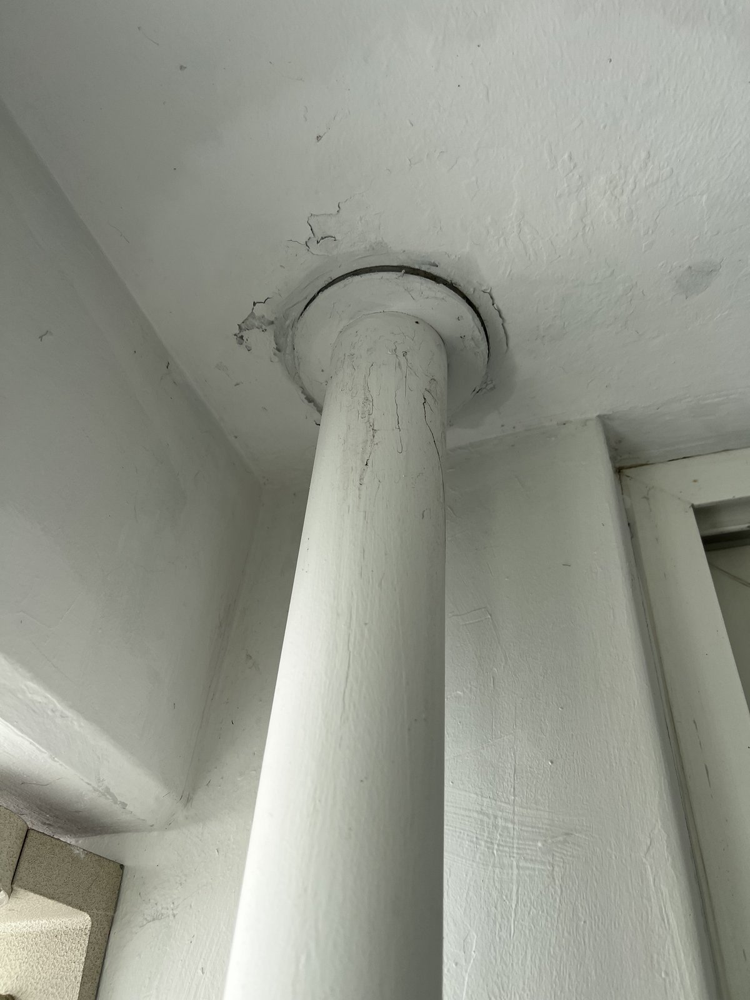

대전 관저동 구봉마을 베란다 우수관 보수｜하부 배수 부속을 새로 놓고 재연결

작업 핵심
현장 작업 한눈에 보기
- 현장
- 대전 구봉마을 · 베란다 우수관
- 문제
- 우수관이 바닥으로 들어가는 연결부
둘레를 따로 메운 흔적 - 작업
- 보양·관 분리·타일 절단·기존 부속 철거
새 바닥 배수 부속 설치·우수관 재연결 - 결과
- 재연결과 하부 마감 사진 확인
통수시험 수치·소요시간은 미기재
대전 서구 관저동 구봉마을아파트 베란다 우수관 하부 작업입니다. 관을 분리해 바닥 속 기존 부속을 걷어 내고, 새 바닥 배수 부속을 놓은 뒤 우수관을 다시 연결했습니다. 보양부터 마감까지 사진 9장으로 소개합니다.
1. 작업 전 보양
대전 서구 관저동 구봉마을아파트 베란다 우수관 작업입니다. 2026년 10월 8일 오전 사진을 순서대로 소개합니다.
먼저 베란다 창과 주변을 비닐로 덮었습니다. 바닥을 깨는 작업이라 먼지가 날리기 때문입니다.

2. 작업 전 우수관 하부
우수관이 바닥으로 들어가는 자리입니다. 연결부 둘레를 사각으로 따로 메운 흔적이 보입니다.

3. 우수관 분리
바닥 연결부에서 우수관을 뽑아 분리했습니다.

4. 기존 부속 철거
연결부 둘레를 깨어 기존 부속과 몰탈을 걷어 냈습니다.

5. 바닥 속 배관 입구
타일을 사각으로 잘라 넓히자 바닥 속 배관 입구가 드러났습니다.

6. 새 바닥 배수 부속
드러난 자리에 새 바닥 배수 부속을 맞춰 앉혔습니다.

7. 우수관 재연결
우수관을 새 부속에 다시 꽂고 둘레를 채웠습니다.

8. 하부 마감
하부를 정리한 모습입니다. 우수관 옆으로 새 배수구 덮개가 보입니다. 2번 사진과 비교해 보세요.
9. 천장 쪽 연결부
위쪽 천장 연결부도 함께 확인해 기록했습니다.

10. 확인한 범위와 상담 안내
이번 기록은 사진으로 확인되는 공정 범위입니다. 통수시험 수치와 총 작업시간은 자료가 없어 적지 않았습니다.
우수관 하부에 물 자국이 보이면 우수관 아래·위 연결부와 바닥 배수구를 각각 찍어 상담해 주세요.